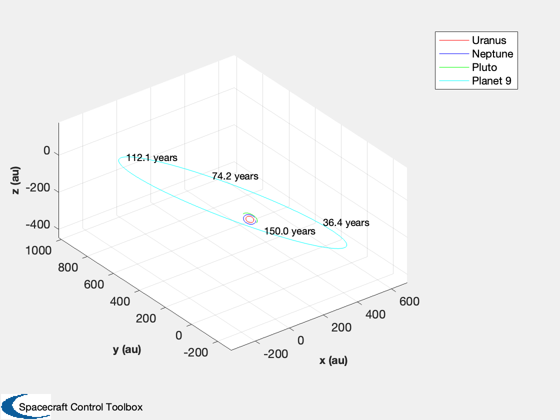
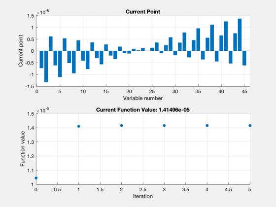
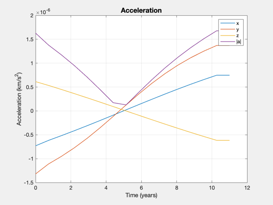
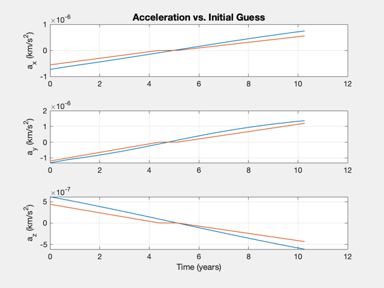
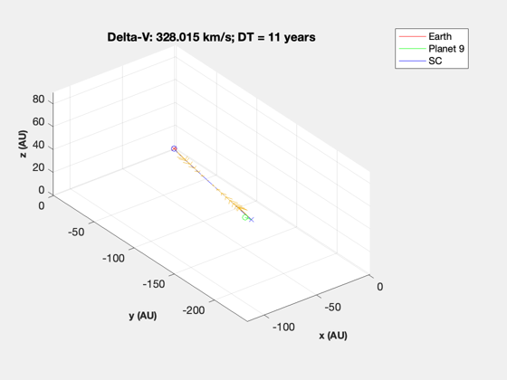
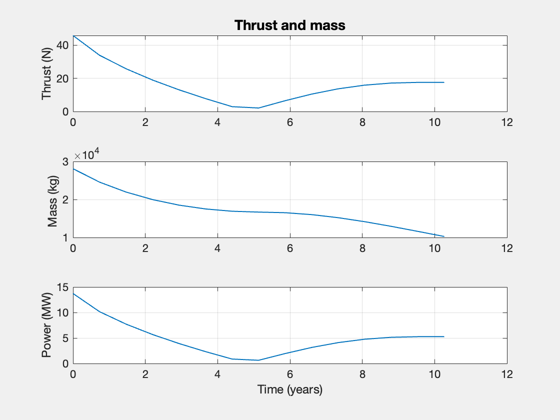

Optimal continous thrust transfer to Planet 9
Compute an optimal 3D trajectory to Planet 9's presumed orbit. Size a spacecraft to bring a specific payload there given engine parameters. This demo requires the optimization toolbox.
See also: Constant, RVOrbGen, Date2JD, TrajectoryBetweenTwoPlanets, SpacecraftFromAccel
Contents
%-------------------------------------------------------------------------- % Copyright (c) 2021 Princeton Satellite Systems, Inc. % All rights reserved. %-------------------------------------------------------------------------- % Since 2021.1 %--------------------------------------------------------------------------
Setup
% Constants AU = Constant('au'); MU = Constant('mu sun'); secInYear = 86400*365.25; dToR = pi/180; % Planet 9 assumed orbit el = [700*AU [30 100 140]*dToR 0.6 0]; [r,v,t] = RVOrbGen(el,[],[],MU); % Today's date jD0 = Date2JD; % Plot the planet 9 orbit with the outer planets, it's quite large HelioPlot([7 8 9],150,jD0,r,{'Planet 9'});
Compute an optimal trajectory (fmincon)
years = 11; % 50, 20 planet1 = 3; planet2 = struct; planet2.name = 'Planet 9'; planet2.el = el; nSteps = 15; s = TrajectoryBetweenTwoPlanets( jD0, planet1, planet2, years, nSteps );
First-order Norm of
Iter F-count f(x) Feasibility optimality step
0 91 1.044776e-05 5.114e+09 3.987e-06
1 182 1.410289e-05 6.500e+07 1.418e+03 1.014e-06
2 273 1.414919e-05 6.178e+06 2.834e+02 3.460e-08
3 364 1.414982e-05 1.185e+06 8.384e+00 4.931e-09
4 455 1.414965e-05 4.284e+04 1.122e-01 1.803e-10
5 546 1.414964e-05 3.403e+02 1.042e-02 4.465e-12
Optimization stopped because the relative changes in all elements of x are
less than options.StepTolerance = 1.000000e-10, and the relative maximum constraint
violation, 6.653471e-08, is less than options.ConstraintTolerance = 1.000000e-06.
Nonoptimal solution, flag: 2
iterations: 5
funcCount: 546
constrviolation: 340.27
stepsize: 4.4649e-12
algorithm: 'interior-point'
firstorderopt: 0.010423
cgiterations: 0
message: 'Local minimum possible. Constraints satisfied.↵↵fmincon stopped because the size of the current step is less than↵the value of the step size tolerance and constraints are ↵satisfied to within the value of the constraint tolerance.↵↵<stopping criteria details>↵↵Optimization stopped because the relative changes in all elements of x are↵less than options.StepTolerance = 1.000000e-10, and the relative maximum constraint↵violation, 6.653471e-08, is less than options.ConstraintTolerance = 1.000000e-06.'
bestfeasible: []
Final Equality Constraints (km, km/s)
340.27
303.23
-50.922
1.08e-06
1.03e-06
-1.787e-07
    Size the spacecraft
sC = SpacecraftFromAccel; sC.uE = 300; % exhaust velocity, km/s sC.sigma = 2e3; % specific power, W/kg sC.fS = 0.02; % fuel structural fraction sC.mP = 2000; % payload mass, kg sC.eff = 0.5; % efficiency to jet thrust power SpacecraftFromAccel(sC,s); %-------------------------------------- % $Id: e85964e66613116708ce096e2eb3bdef3d1ae7b2 $
Total mission DV: 327.5 km/s Max thrust power: 13.729 MW Total mass: 28104.6 kg Payload mass: 2000 kg Engine mass: 6865 kg Fuel mass: 18669 kg Structural mass: 373 kg Payload Fraction: 0.0711626